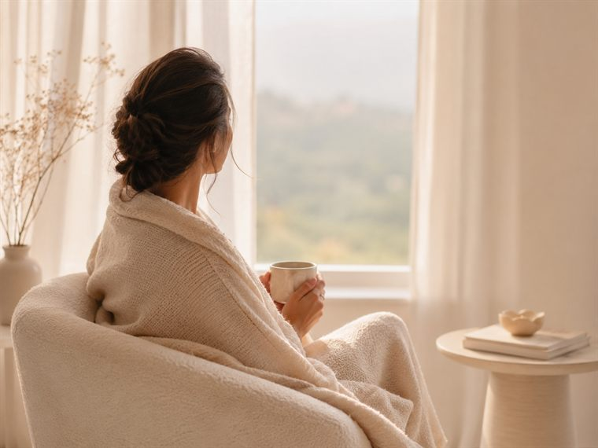
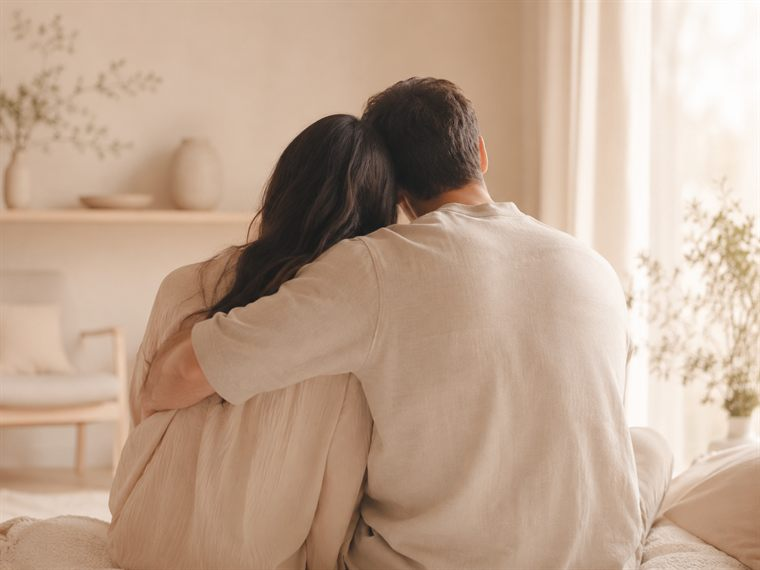
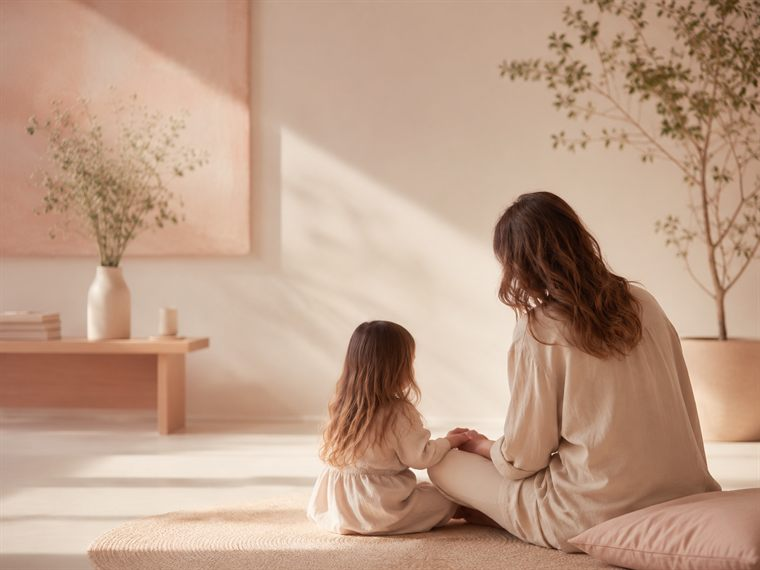
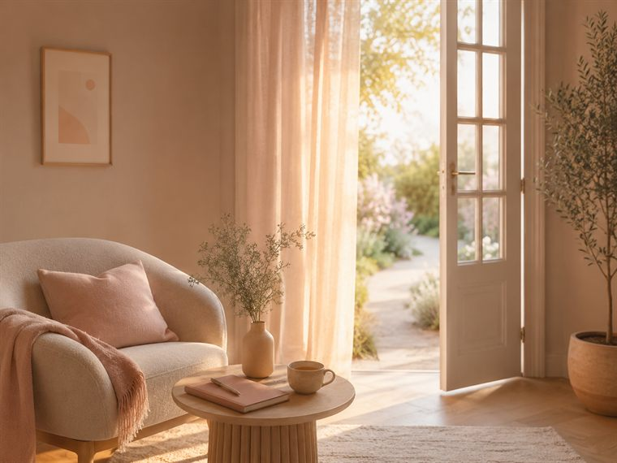
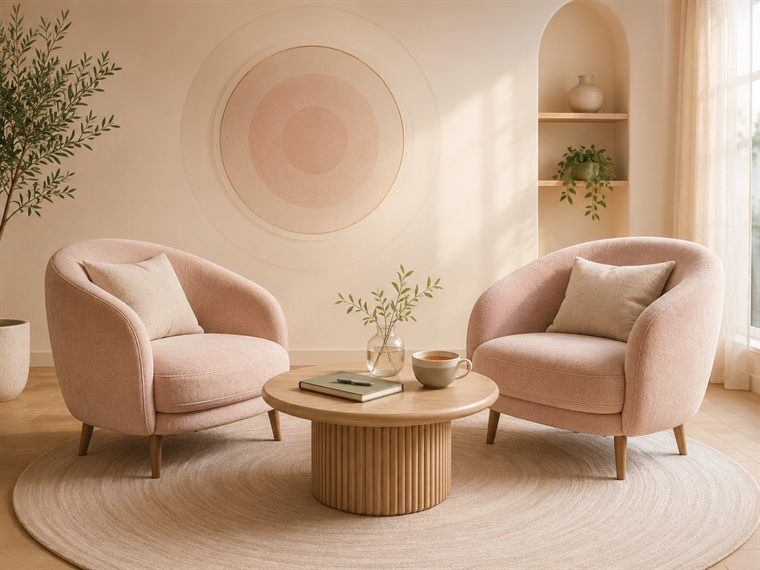
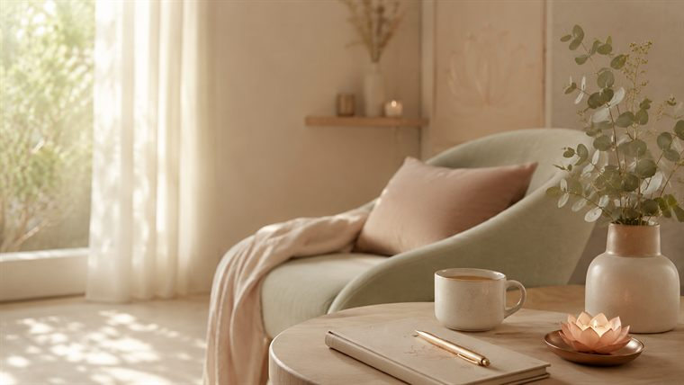

הבלוג
על זוגיות, פרידה, פרק ב' והדרך חזרה אל עצמך — מתוך עבודה רגשית אמיתית.

גירושין
איך לעבור את הפרידה בשלמות, ולפנות מקום לחיים חדשים שמחכים בצד השני.
קריאה ←
זוגיות
הדפוס שמרגיש מקרי הוא לרוב הכי לא מקרי. איך מזהים אותו — ואיך משחררים.
בקרוב ←
משפחה משולבת
מהשטח האישי: על השתלבות ילדים, גבולות, וזוגיות שצומחת בתוך המורכבות.
בקרוב ←
הדרכה הורית
איך לעצור רגע לפני התגובה האוטומטית, ולבחור איזו אמא או אבא את/ה רוצה להיות.
בקרוב ←
זוגיות
על המעבר מתקווה פסיבית לבחירה מודעת, ואיך זה משנה את כל מערכות היחסים.
בקרוב ←
חיבור למהות
עבודת גוף-נפש שמחזירה תחושת נוכחות ומשמעות, גם כשהחיים מרגישים תקועים.
בקרוב ←